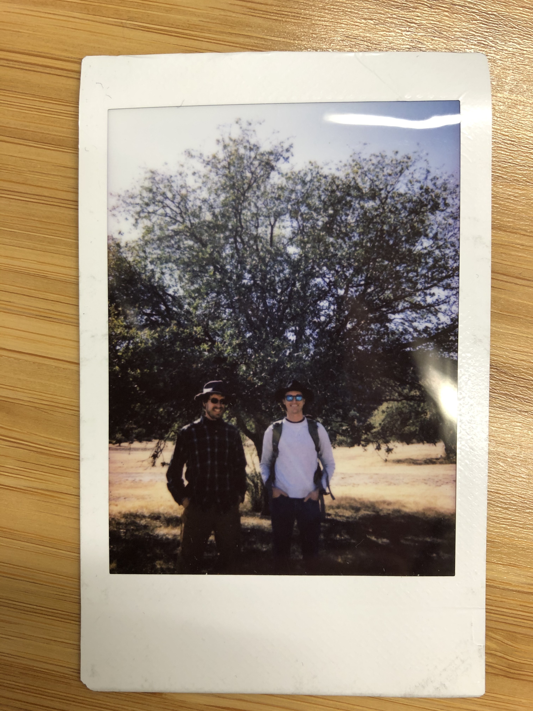

January 18, 2020: Nick gives an outreach talk to the Texas Native Plants Society
Nick visited Alpine, Texas to give a seminar on the resilience of West Texas flora
to the Big Bend chapter of the Texas Native Plant Society.
The talk was part of a program on the potential impacts of climate change
on the flora of the Big Bend and Trans Pecos (pronounced "paycos" as Nick was reminded!).
The talk was attended by concerned citizens and scientists alike. Nick presented
some reasons for optimism for the local flora (West Texas plants are tough!), but
also some reasons for concern for the region. In short: while these plants have the physiological
capabilities to withstand future climates, impacts at higher ecological levels could
be detrimental. These include community- and ecosystem- level impacts. Nick's talk
can be accessed
here.

Nick with fellow seminar speaker Dylan Schwilk visiting Fort
Davis after the talk (photo credit: Stella Rose Smith).